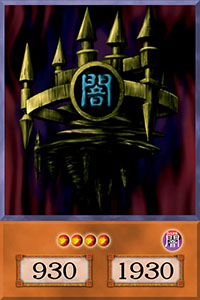
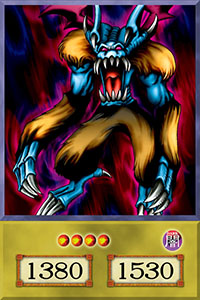
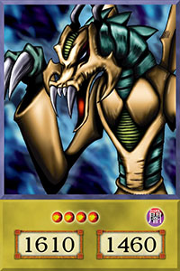
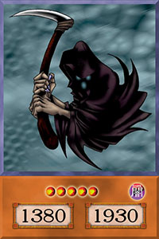
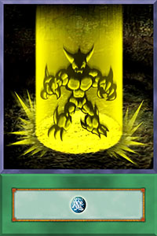

Castelo das Ilusões das Trevas

Barox

Quimera Negra

Ceifador de Cartas

Rei de Yamimakai

Guardião Metálico

Muitas das cartas receberam nomes diferentes com a tradução, principalmente na dublagem do anime. Nessa página as cartas seguem os nomes traduzidos do jogo real
Coloquei informações adicionais em algumas cartas. Elas estão sinalizadas pelo símbolo * e a informação adicional está após o mural de cartas.